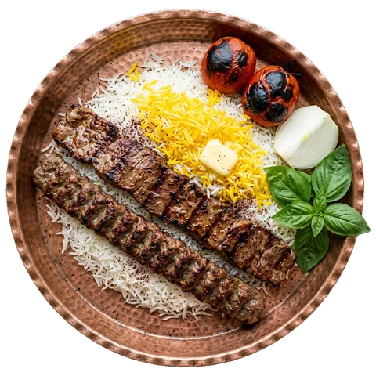
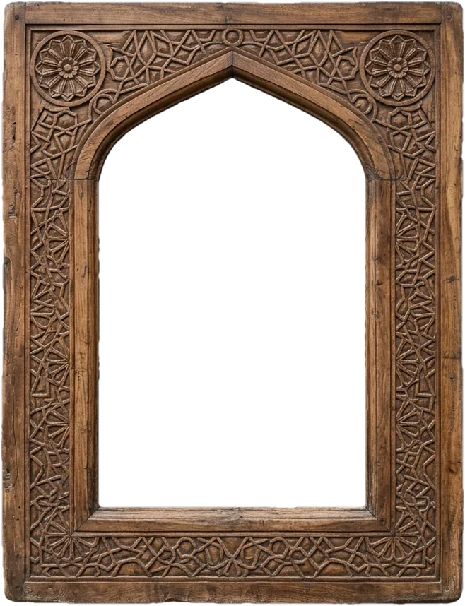
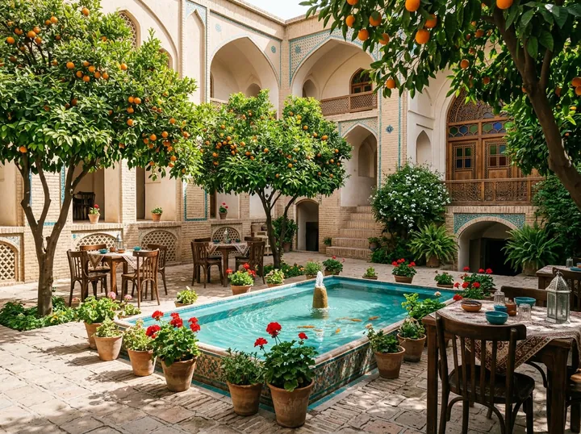
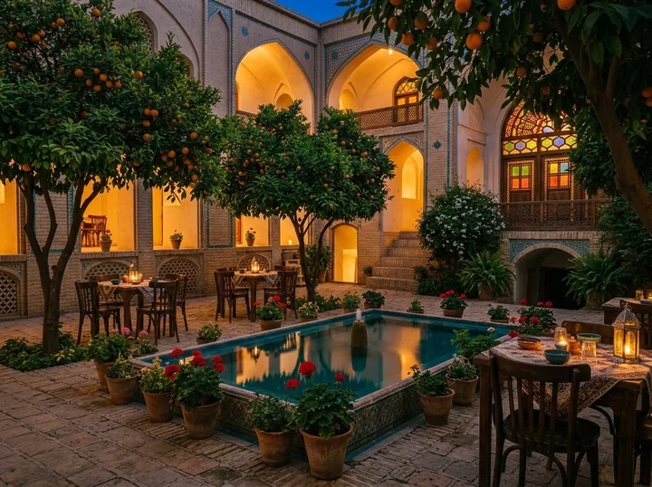
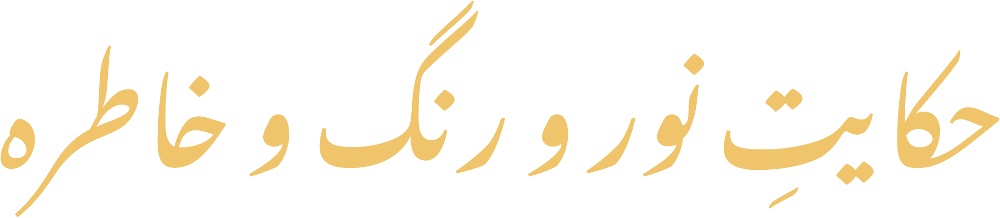
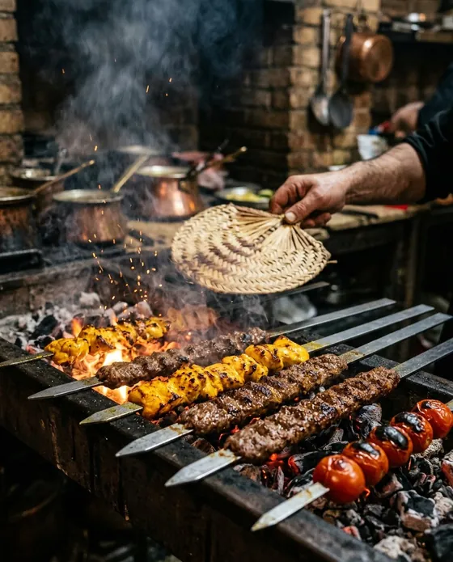
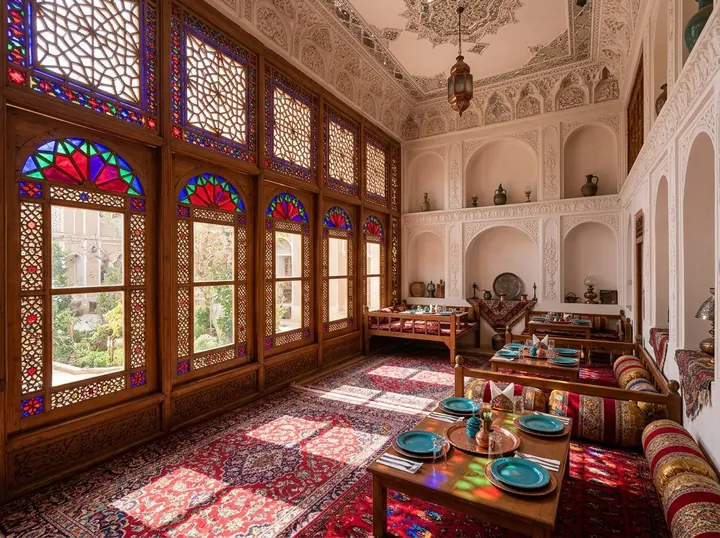
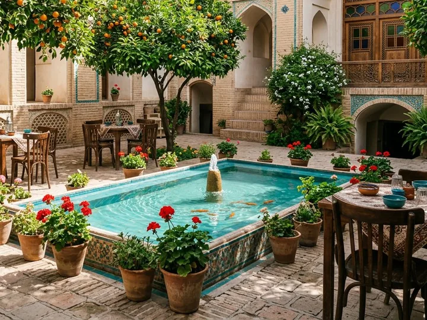
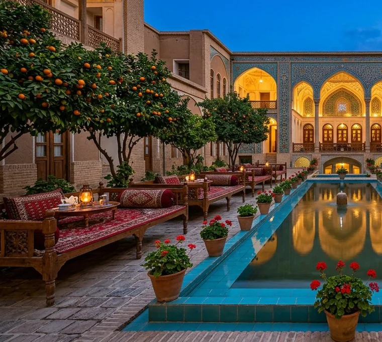

چلوکباب سلطانی
۸۹٬۰۰۰ تومانیک سیخ برگِ راسته و یک سیخ کوبیدهٔ دستپیچ بر چلوی زعفرانی، با گوجهٔ کبابی، ریحان و سماق.


چایخانه و سفرهخانهٔ سنتی · خانهٔ تاریخی، محلهٔ عودلاجان

در حیاطِ خانهای صدساله، زیر سایهٔ نارنجها؛ کباب بر آتشِ زغال، خورشهای جاافتاده و چایِ دمکشیده در استکانِ کمرباریک.

حکایتِ ما
ارسی، نامِ پنجرههای رنگیِ همین خانه است؛ پنجرههایی که آفتاب را به فرشی از رنگ بر زمین مینشانند. ما این خانهٔ تاریخی را همانگونه که بود نگه داشتیم و سفرهاش را برای شما پهن کردیم.
در آشپزخانهٔ ارسی هیچچیز شتابزده پخته نمیشود: خورشها ساعتها جا میافتند، برنج دَم میکشد تا تهدیگ طلائی شود و کبابها بر آتشِ زغالِ بلوط، بیعجله و با حوصله میچرخند.
فضاهای نشستن
از سایهٔ نارنجِ حیاط تا نورِ رنگیِ شاهنشین؛ جایی را که دلتان میخواهد، انتخاب کنید.

تالارِ آیینه و ارسی؛ صبحها نورِ رنگی از پنجرهها میبارد و شبها فانوسها روشن میشوند. برای جشنها و دورهمیهای بزرگ.

لبِ حوض، زیر سایهٔ نارنج؛ خنکترین و پرسروصداترین کنجِ خانه، با آواز گنجشکها.

تختهای فرشاندازِ ایوان رو به حوض؛ جای محبوبِ عصرها، برای چای و قلیان و گفتوگوی طولانی.
بهزودی درِ سردابِ چایخانه هم باز میشود: ساموارِ برنجی، نیمکتهای گیلمی و خنکترین کنجِ خانه در تابستان.
عصرانه و چایخانه
عصر که میشود، ساموارِ سرداب جوش میآورد و خانه بوی هل و دارچین میگیرد. چایِ ما دمکشیده و رنگداده است؛ نه عجلهای در دم دارد، نه در نوشیدن.
همراه با نقلِ اصفهان، خرما و گردو و شیرینیِ خانگیِ فصل — مهمانِ خانهٔ ارسی باشید.
رزرو میز و تخت
فرم را پر کنید؛ میزبانِ خانه بهزودی تماس میگیرد و جا را برایتان نگه میدارد. برای جمعهای بالای ۱۰ نفر و مراسم، تلفنی هماهنگ کنید.